QIS is a student group at the University of Michigan. We study the mathematics, statistics, and software that underpin the field.
We were founded in 2018 by four computer science students, who went onto found their own hedge fund startup. Members today learn together through coursework, projects, and network with industry partners.
Lectures and coursework in probability, statistics, and quantitative finance.
Applied work on data, models, and strategy research.
Team entries in quant trading and research competitions.
Long-running relationships with firms and alumni.
The firms supporting QIS this year through recruiting, mentorship, and shared resources.


Organizations that help us teach, and give our members a place to compete.

QIS will host its first live trading competition with Tradermath soon. Everyone plays on the same clock with a live leaderboard, across games like market making, ETF arbitrage, Fermi estimation, and a shared order book where the whole room trades one contract. Some events will be open to all U-M students. Winners of the first competition get Tradermath Premium.
Everyone starts as a general member. From there, members can apply to become an Associate on one of our project tracks. Recruiting will pick back up in the Winter semester.
Everyone joins QIS as a general member first.
General members can apply and interview to join a cohort on one of three tracks: Quantitative Research, Quantitative Trading, or Quantitative Development.
Recruiting is paused until the Winter semester. Email us any time with questions about QIS, sponsorship, or partnerships.
Recruiting will pick back up in the Winter semester. Questions in the meantime? Feel free to email us anytime.
Firms that have supported QIS in previous years.



